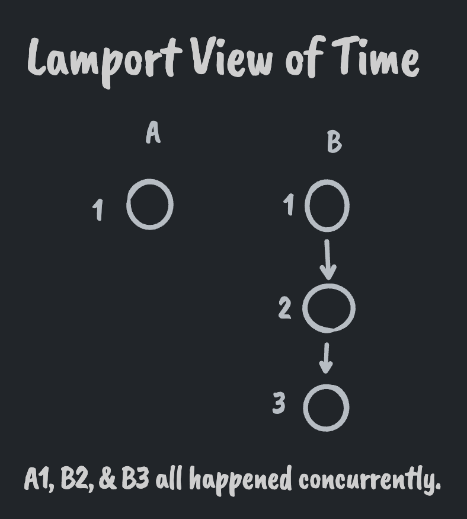
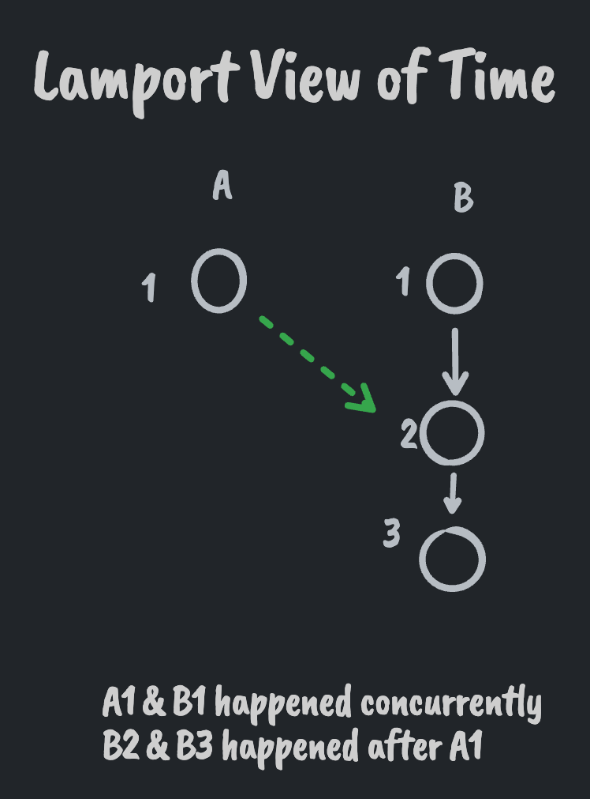
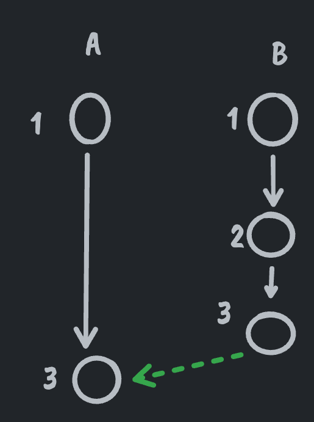

Lamport Clock 🕥
Published 2022-10-18The Lamport clock was originally described in 1978 in the paper "Time, Clocks, and the Ordering of Events in a Distributed System". It is a logical clock that was created as a way to order events in a distributed system.
Why not use wall/physical clocks?
Physical clocks are hard to keep in sync across participants in a distributed system, especially as those participants get further apart with respect to latency.
Even if we did have perfectly synced physical clocks, physical clocks don't provide accurate causal information.
Causality
If event A happened before event B according to physical time, it is possible that A caused B but not guaranteed. As an example -- Bill bought a surfboard in Sydney at 1am UTC. I woke up in Washington DC at 11am UTC. While the purchasing of the board happened before me waking up, there is no causal relationship between the two.
Logical clocks, on the other hand, track which messages are passed between which processes and use that as their basis of time. If two processes never exchange messages, all of their events or considered to be concurrent. When two processes do exchange a message with one another, their events from that point forward happen after all events prior to the message exchange.
In the surfboard example, the purchasing of the board and me waking up would be considered concurrent. If, however, Bill called me before purchasing the board (thus exchanging a message from his process to mine), my waking up would happen after Bill purchased the board.
Logical clocks provide a stronger guarantee of causal relationships since the times of processes can only be later than the times of other processes if they've interacted. Non-interacting processes do not influence one another and are considered concurrent.


Lamport Guarantees
The Lamport clock is the simplest form of logical clock. It only provides one guarantee when comparing clocks of events from two different systems:
if a happened before b then Clock(a) < Clock(b)
Note that the converse is not true for Lamport clocks (paper pg 560):
if Clock(a) < Clock(b) then a happened before b.
This means that while the Lamport clock can tell you that B did not happen before A, it can't tell you whether or not B was after or concurrent with A.
Note: comparing clocks of events on the same system provides absolute guarantees but that isn't of interest to us.
Some systems need stronger guarantees. I.e., knowing that B is strictly after and not concurrent with A. There are other clocks (vector clocks, interval tree clocks, causal graphs, merkle clocks, etc.) that can provide that information. Lamport clocks, however, are perfect for systems that don't need finer grained resolution. One such use case is a last write wins register. See Do LWW Registers Need Vector Clocks or Causal Graphs?.
Implementation
Implementing a Lamport clock is fairly straightforward. Each participant in a distributed system keeps a counter of events that have occurred locally. This counter is incremented for every new event that happens locally and must never run backwards.
Whenever participants exchange messages they also exchange clock values. Participants update their clock to the max of (received clock, local clock).
This "clock pushing" / "setting to max" on message events is what guarantees that if "a" happened before "b" then Clock(a) < Clock(b).

The fact that no information about where the clock value came from is retained is what limits Lamport clocks to not being able to tell you if "a" was before or concurrent with "b".
This is the case since an event on system B can have a larger clock value than an event on system A, even if they've never exchanged messages, simply by B being more active than A.
If a Lamport clock was extended to retain information about what clock values were received from whom (e.g., a vector clock) then we can differentiate between concurrent and happened before relationships.
Back-channels
Unfortunately logical clocks don't deal with back-channels or methods of transmitting causal information between systems outside of the awareness of said systems.
Our resource scheduling algorithm ordered the requests according to the total ordering =>. This permits the following type of "anomalous behavior." Consider a nationwide system of interconnected computers. Suppose a person issues a request A on a computer A, and then telephones a friend in another city to have him issue a request B on a different computer B. It is quite possible for request B to receive a lower timestamp and be ordered before request A. This can happen because the system has no way of knowing that A actually preceded B, since that precedence information is based on messages external to the system.
Hybrid logical clocks -- logical clocks with a physical time component -- are an alternative we can explore for these cases.